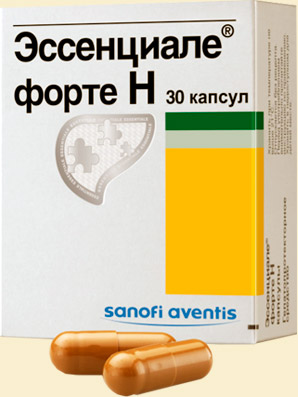

Эссенциале® форте Н — лекарственный препарат на основе натуральных фосфолипидов, который восстанавливает клетки печени, помогая улучшить самочувствие и справиться с симптомами: утомляемость, снижение аппетита и тяжесть в правом подреберье

Эссенциале® форте Н
- Содержит ЭФЛ высокой степени очистки
- Производится в соответствии со стандартами GMP
- Применение эссенциальных фосфолипидов ведет к нормализации структурно-функциональной целостности клеточных мембран гепатоцитов и позволяет восстановить нормальный метаболизм клетки
- Препарат №1 среди гепатопротекторов в России
- Производится в Германии в виде капсул (30 и 100 капсул в упаковке)
- Действие подтверждено клиническими исследованиями
- 9 из 10 пользователей высоко оценивают эффект Эссенциале® форте Н